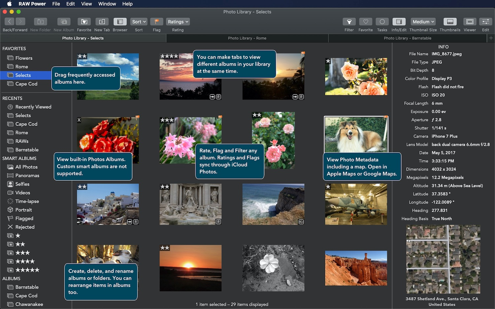
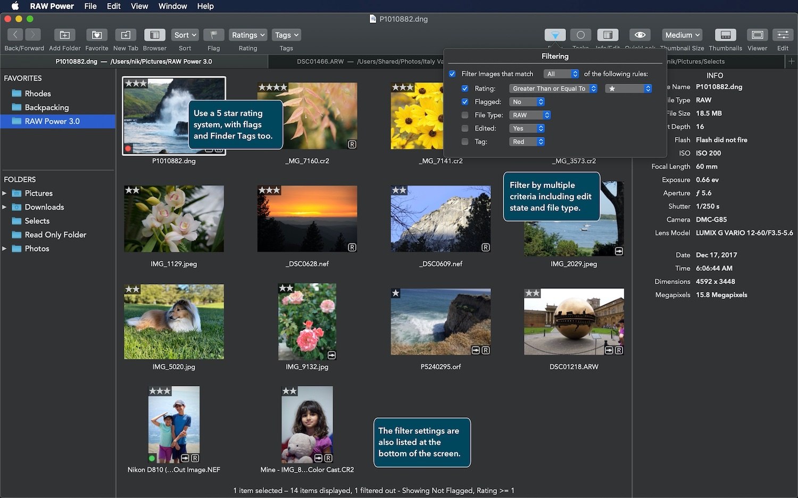
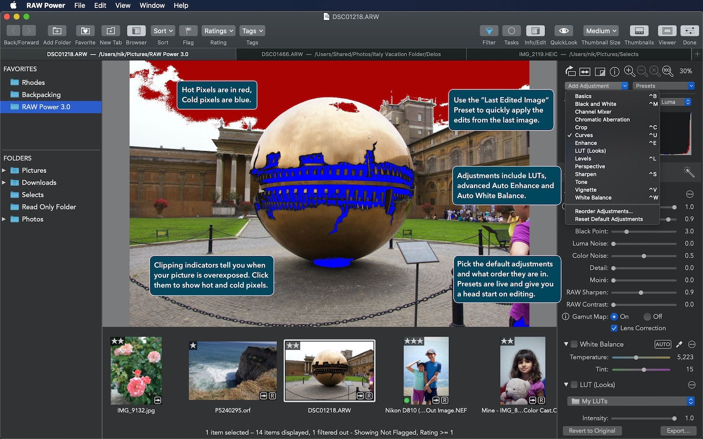
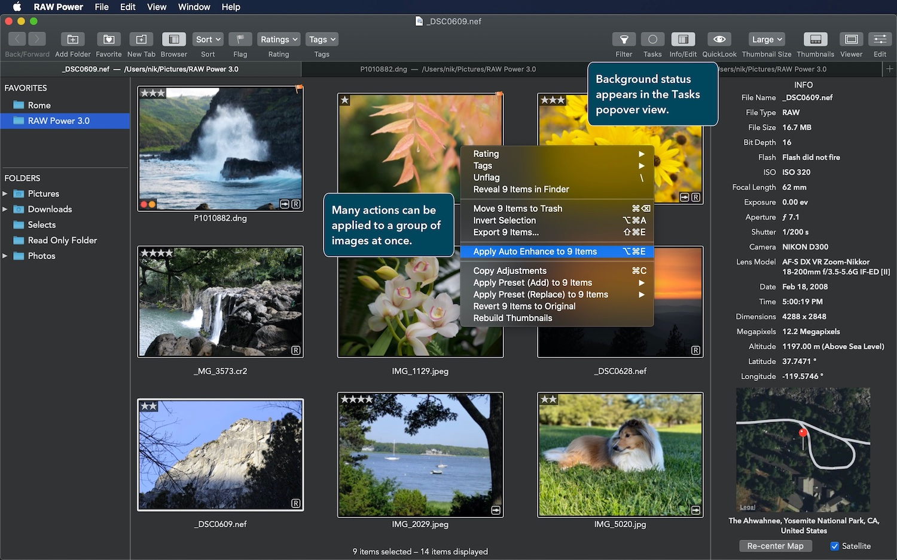

Black Friday Sale: RAW Power is up to 50% off until Dec. 1!
Now: Support for the Sony A7R5, A6700, Fujifilm X-H2, X-S20 and X-T5 (some require macOS 13+)
Work with your Photos library or Finder folders. Full support for iCloud Photos! (10.15 or later)
Rate and flag images. Filter by four criteria. Ratings and Flags even sync over iCloud Photos!
Multiple windows and tabs. View and edit multiple folders, Photos albums, and files at once.
New advanced Auto Enhance that can be applied to multiple images at once.
Like Aperture’s RAW Fine Tuning, but real-time, and with more controls
Work with Gamma-corrected or Linear data, and the Lab color space
Use the app for file browsing and for the Photos library. It's a Photos Extension too.
Live Hot Pixels, Clipping Indicators, and White Balance Sampling
GPU Accelerated, high-precision imaging for great quality
Organize your iOS Photo Library. Fully compatible with iCloud Photos, so your changes are synced to all your devices automatically.
Rate and flag images with a single keystroke. Filter by multiple criteria. Ratings and flags sync over iCloud Photos!
Unleash Apple's RAW engine like no other app since Aperture.
Work on multiple images in the background. Apply presets, auto enhance, export, and more.
